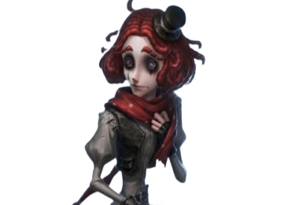
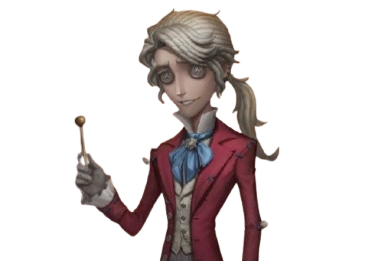

Joker
Joker
( Weeping Clown)
"A broken smile hides the deepest sorrow."
Backstory
Once a circus performer, Joker lived to bring joy to the
audience. But as laughter faded and cruelty took its place, he
became the target of mockery and scorn. Cast aside and left to
wander, he clung to the remnants of his broken dreams. Now, at
Oletus Manor, he plays the fool in a game where no one is truly
laughing.

Luchino Diruse
( Professor)
"Knowledge is power… but evolution demands sacrifice."
Backstory
Once a brilliant yet controversial scientist, Luchino Diruse
dedicated his life to the study of reptilian genetics, obsessed
with unlocking the secrets of evolution. His experiments pushed
ethical boundaries, and rumors spread of his willingness to use
human subjects in his quest for perfection. When one of his
experiments went horribly wrong, Luchino vanished, presumed
dead. But at Oletus Manor, he emerged again—no longer fully
human, but something far more terrifying.
Qi Shiyi
( Antiquarian)
"Every relic holds a story… and some are better left forgotten."
Backstory
Once a dedicated scholar, Qi Shiyi traveled far and wide to
uncover lost artifacts and forgotten histories. Her passion for
preservation, however, led her to questionable
dealings—smuggling relics, forging documents, and deceiving
collectors to keep treasures out of unworthy hands. When one of
her transactions went awry, she vanished without a trace, only
to resurface at Oletus Manor, where every discovery comes at a
price.

Frederick Kreiburg
Frederick Kreiburg
(Composer)
"Every note has meaning… even the ones drenched in sorrow."
Backstory
Once a celebrated musician, Frederick Kreiburg composed
symphonies that enchanted audiences far and wide. But as his
fame grew, so did the pressure to create perfection. Desperate
to surpass his past works, he turned to unethical means—stealing
melodies, silencing rivals, and manipulating those who trusted
him. When his secrets unraveled, his reputation crumbled,
leaving him with nothing but the echoes of his own deceit. Now,
at Oletus Manor, his music lingers, a haunting melody of
ambition and regret.